规定初始像素覆盖已通过独立数据验收，完整12步与物理安全未通过。Prescribed initial pixel coverage passes the independent DATA audit; full12-step and physical acceptance remain incomplete. Original1280×720; no edits/crop. Every image below is INITIAL, not micro1/final.
{"seed": 2, "proposal_id": 2496, "global_id": 25024, "family": 0}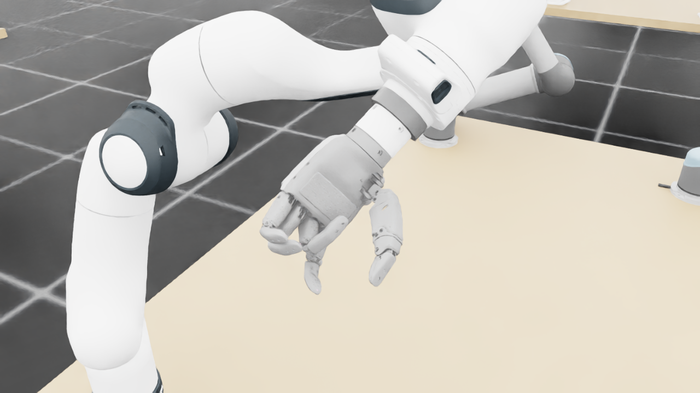
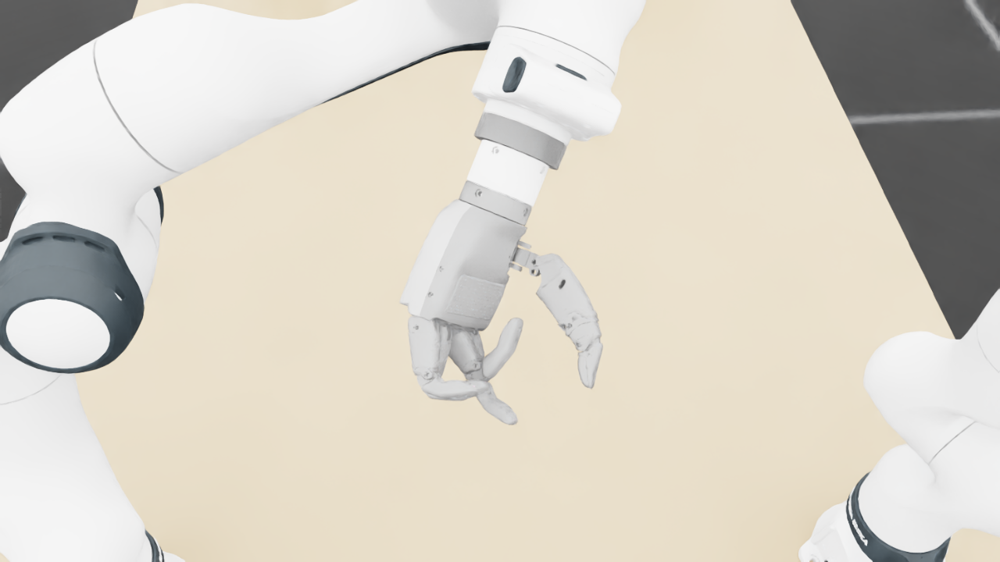
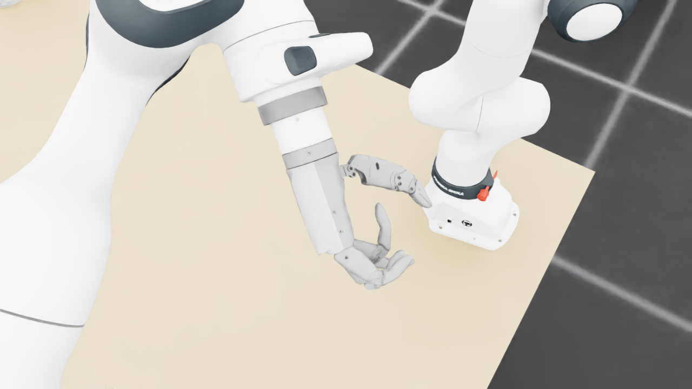
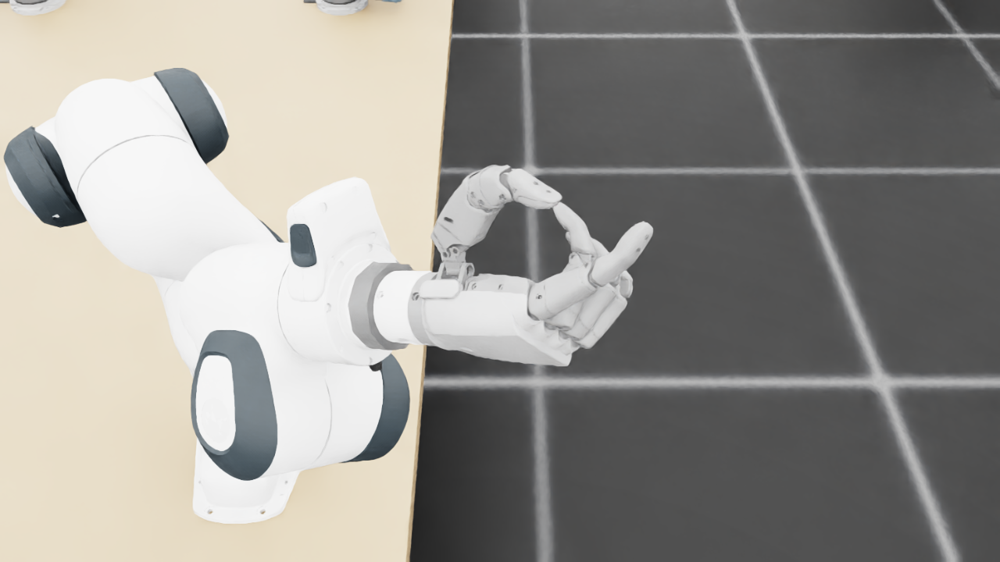
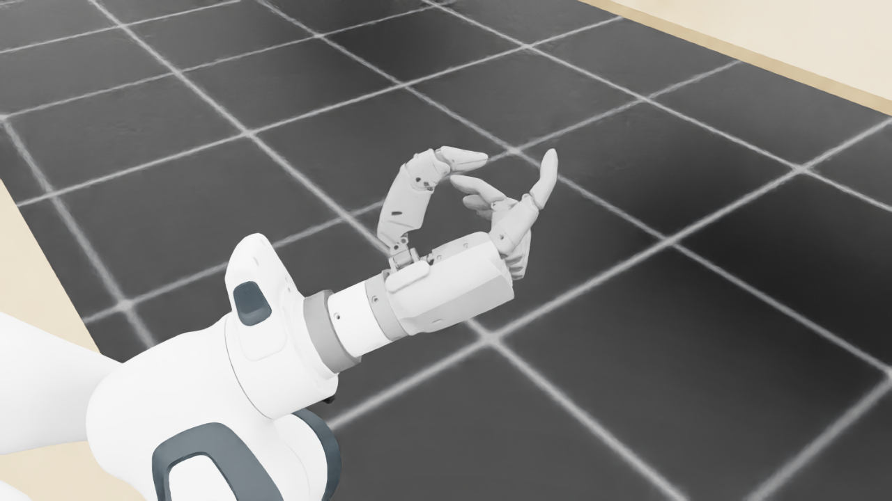
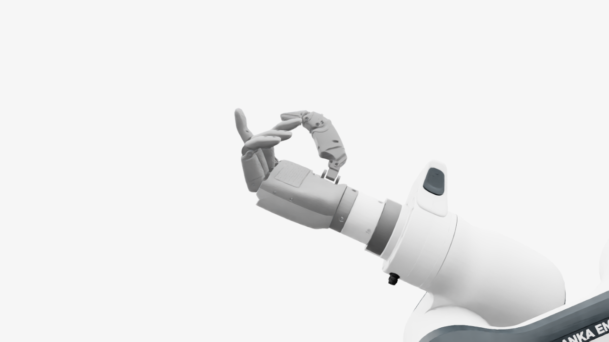
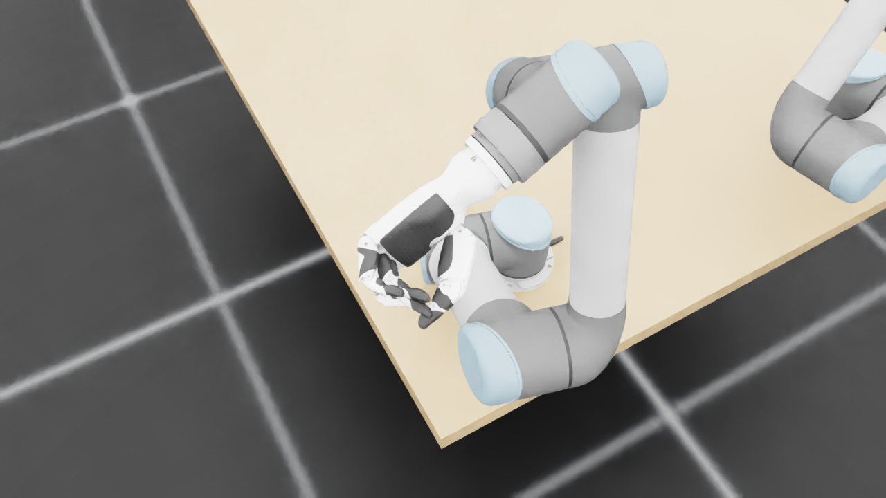
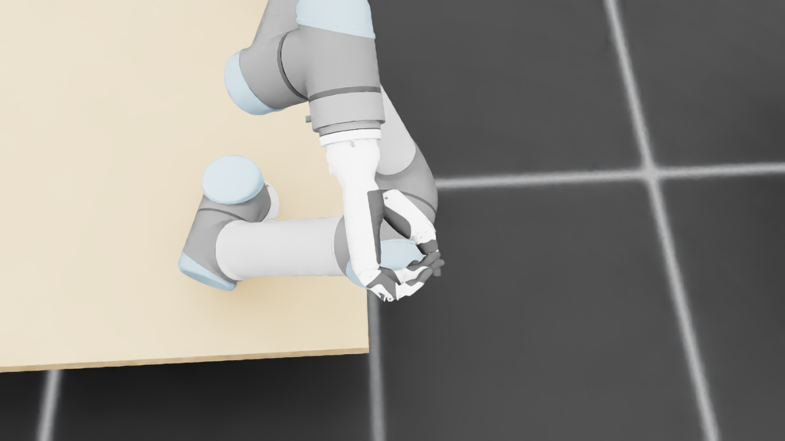
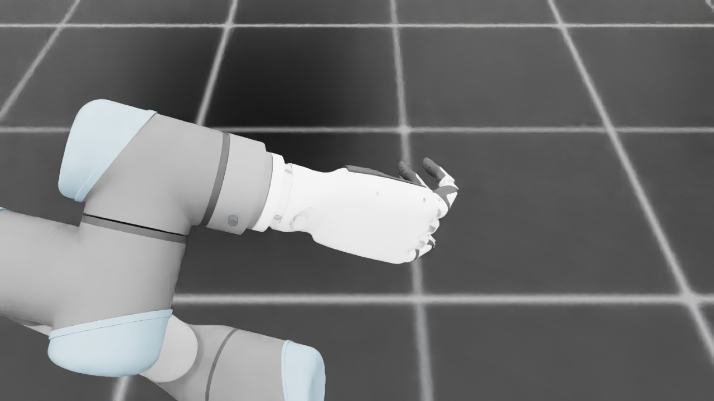
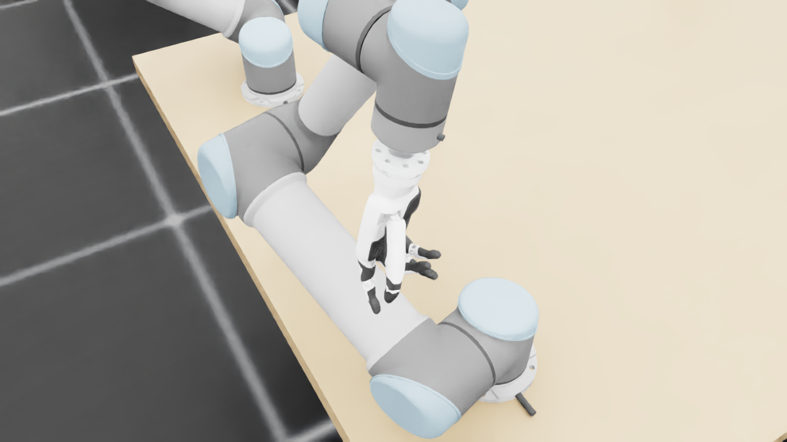
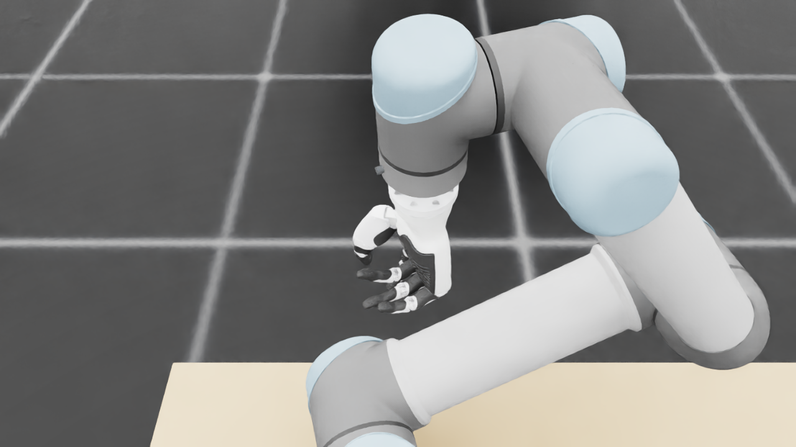
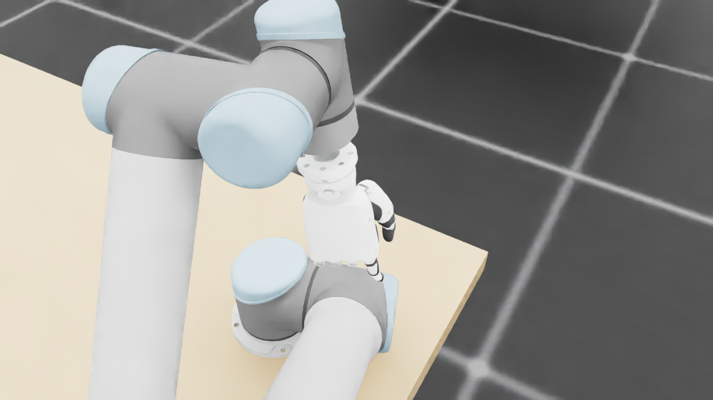
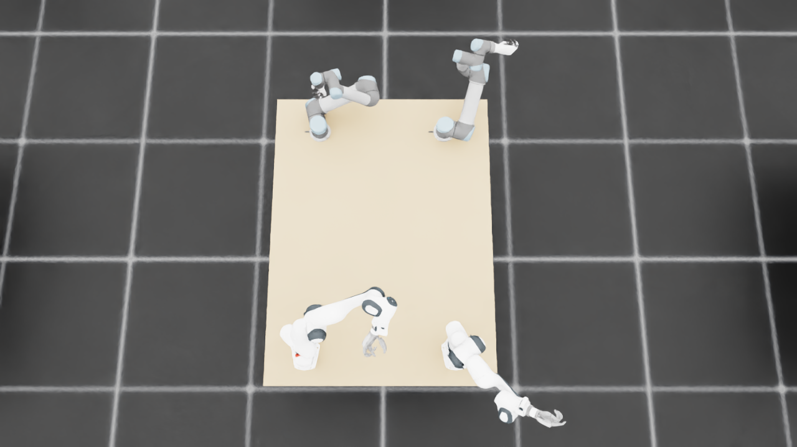
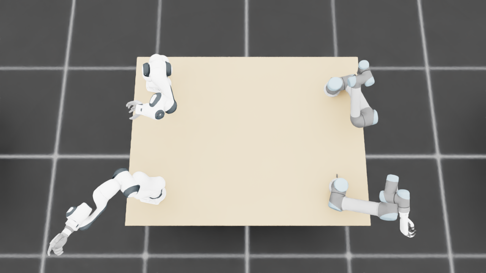
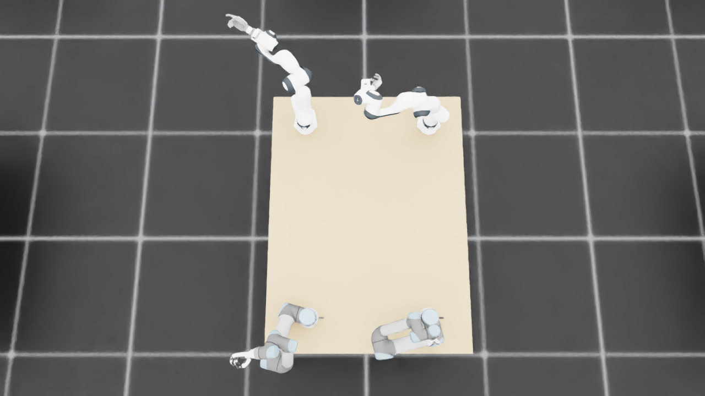
{
"qualified": true,
"arms": {
"F_L": {
"qualified": true,
"palm_visual_peak_pixels": 17759,
"finger_family_peak_pixels": {
"thumb": 8376,
"index": 2161,
"middle": 3976,
"ring": 2617,
"little": 4932
},
"per_native_body_peak_pixels": {
"/World/envs/env_16/F_L/f2_hand/left_hand_base": 27556,
"/World/envs/env_16/F_L/f2_hand/left_index_1": 568,
"/World/envs/env_16/F_L/f2_hand/left_middle_1": 1696,
"/World/envs/env_16/F_L/f2_hand/left_pinky_1": 3132,
"/World/envs/env_16/F_L/f2_hand/left_ring_1": 1309,
"/World/envs/env_16/F_L/f2_hand/left_thumb_1": 673,
"/World/envs/env_16/F_L/f2_hand/left_index_2": 1593,
"/World/envs/env_16/F_L/f2_hand/left_middle_2": 2524,
"/World/envs/env_16/F_L/f2_hand/left_pinky_2": 1800,
"/World/envs/env_16/F_L/f2_hand/left_ring_2": 1308,
"/World/envs/env_16/F_L/f2_hand/left_thumb_2": 4441,
"/World/envs/env_16/F_L/f2_hand/left_thumb_3": 1845,
"/World/envs/env_16/F_L/f2_hand/left_thumb_4": 2103
},
"native_body_visibility_gaps": [],
"all_native_hand_bodies_observed": true,
"full_mesh_coverage_certified": false,
"all_recorded_attempt_peak": {
"qualified": true,
"palm_visual_peak_pixels": 17759,
"finger_family_peak_pixels": {
"thumb": 8376,
"index": 2161,
"middle": 3976,
"ring": 2617,
"little": 4932
},
"per_native_body_peak_pixels": {
"/World/envs/env_16/F_L/f2_hand/left_hand_base": 27556,
"/World/envs/env_16/F_L/f2_hand/left_index_1": 568,
"/World/envs/env_16/F_L/f2_hand/left_middle_1": 1696,
"/World/envs/env_16/F_L/f2_hand/left_pinky_1": 3132,
"/World/envs/env_16/F_L/f2_hand/left_ring_1": 1309,
"/World/envs/env_16/F_L/f2_hand/left_thumb_1": 673,
"/World/envs/env_16/F_L/f2_hand/left_index_2": 1593,
"/World/envs/env_16/F_L/f2_hand/left_middle_2": 2524,
"/World/envs/env_16/F_L/f2_hand/left_pinky_2": 1800,
"/World/envs/env_16/F_L/f2_hand/left_ring_2": 1308,
"/World/envs/env_16/F_L/f2_hand/left_thumb_2": 4441,
"/World/envs/env_16/F_L/f2_hand/left_thumb_3": 1845,
"/World/envs/env_16/F_L/f2_hand/left_thumb_4": 2103
},
"native_body_visibility_gaps": [],
"all_native_hand_bodies_observed": true,
"full_mesh_coverage_certified": false,
"qualification": false
},
"attempts": 3,
"decoded": 3
},
"F_R": {
"qualified": true,
"palm_visual_peak_pixels": 21127,
"finger_family_peak_pixels": {
"thumb": 10361,
"index": 6871,
"middle": 3207,
"ring": 2425,
"little": 4865
},
"per_native_body_peak_pixels": {
"/World/envs/env_16/F_R/f2_hand/right_hand_base": 27063,
"/World/envs/env_16/F_R/f2_hand/right_index_1": 3839,
"/World/envs/env_16/F_R/f2_hand/right_middle_1": 1241,
"/World/envs/env_16/F_R/f2_hand/right_pinky_1": 2953,
"/World/envs/env_16/F_R/f2_hand/right_ring_1": 1949,
"/World/envs/env_16/F_R/f2_hand/right_thumb_1": 875,
"/World/envs/env_16/F_R/f2_hand/right_index_2": 3032,
"/World/envs/env_16/F_R/f2_hand/right_middle_2": 1966,
"/World/envs/env_16/F_R/f2_hand/right_pinky_2": 1912,
"/World/envs/env_16/F_R/f2_hand/right_ring_2": 1068,
"/World/envs/env_16/F_R/f2_hand/right_thumb_2": 5203,
"/World/envs/env_16/F_R/f2_hand/right_thumb_3": 2392,
"/World/envs/env_16/F_R/f2_hand/right_thumb_4": 2450
},
"native_body_visibility_gaps": [],
"all_native_hand_bodies_observed": true,
"full_mesh_coverage_certified": false,
"all_recorded_attempt_peak": {
"qualified": false,
"palm_visual_peak_pixels": 28140,
"finger_family_peak_pixels": {
"thumb": 10472,
"index": 6871,
"middle": 3207,
"ring": 2734,
"little": 4865
},
"per_native_body_peak_pixels": {
"/World/envs/env_16/F_R/f2_hand/right_hand_base": 33826,
"/World/envs/env_16/F_R/f2_hand/right_index_1": 3839,
"/World/envs/env_16/F_R/f2_hand/right_middle_1": 1241,
"/World/envs/env_16/F_R/f2_hand/right_pinky_1": 2953,
"/World/envs/env_16/F_R/f2_hand/right_ring_1": 1949,
"/World/envs/env_16/F_R/f2_hand/right_thumb_1": 875,
"/World/envs/env_16/F_R/f2_hand/right_index_2": 3032,
"/World/envs/env_16/F_R/f2_hand/right_middle_2": 1966,
"/World/envs/env_16/F_R/f2_hand/right_pinky_2": 1973,
"/World/envs/env_16/F_R/f2_hand/right_ring_2": 2212,
"/World/envs/env_16/F_R/f2_hand/right_thumb_2": 5414,
"/World/envs/env_16/F_R/f2_hand/right_thumb_3": 2608,
"/World/envs/env_16/F_R/f2_hand/right_thumb_4": 2450
},
"native_body_visibility_gaps": [],
"all_native_hand_bodies_observed": true,
"full_mesh_coverage_certified": false,
"qualification": false
},
"attempts": 7,
"decoded": 7
},
"U_L": {
"qualified": true,
"palm_visual_peak_pixels": 5860,
"finger_family_peak_pixels": {
"thumb": 5695,
"index": 825,
"middle": 916,
"ring": 1770,
"little": 3192
},
"per_native_body_peak_pixels": {
"/World/envs/env_16/U_L/wrist_3_link": 54452,
"/World/envs/env_16/U_L/left_index_1": 790,
"/World/envs/env_16/U_L/left_little_1": 2022,
"/World/envs/env_16/U_L/left_middle_1": 370,
"/World/envs/env_16/U_L/left_ring_1": 807,
"/World/envs/env_16/U_L/left_thumb_1": 94,
"/World/envs/env_16/U_L/left_index_2": 475,
"/World/envs/env_16/U_L/left_little_2": 1339,
"/World/envs/env_16/U_L/left_middle_2": 709,
"/World/envs/env_16/U_L/left_ring_2": 1194,
"/World/envs/env_16/U_L/left_thumb_2": 3744,
"/World/envs/env_16/U_L/left_thumb_3": 1498,
"/World/envs/env_16/U_L/left_thumb_4": 518
},
"native_body_visibility_gaps": [],
"all_native_hand_bodies_observed": true,
"full_mesh_coverage_certified": false,
"all_recorded_attempt_peak": {
"qualified": false,
"palm_visual_peak_pixels": 11564,
"finger_family_peak_pixels": {
"thumb": 7300,
"index": 2692,
"middle": 1455,
"ring": 2006,
"little": 3192
},
"per_native_body_peak_pixels": {
"/World/envs/env_16/U_L/wrist_3_link": 54452,
"/World/envs/env_16/U_L/left_index_1": 1718,
"/World/envs/env_16/U_L/left_little_1": 2022,
"/World/envs/env_16/U_L/left_middle_1": 613,
"/World/envs/env_16/U_L/left_ring_1": 927,
"/World/envs/env_16/U_L/left_thumb_1": 94,
"/World/envs/env_16/U_L/left_index_2": 974,
"/World/envs/env_16/U_L/left_little_2": 1339,
"/World/envs/env_16/U_L/left_middle_2": 1055,
"/World/envs/env_16/U_L/left_ring_2": 1194,
"/World/envs/env_16/U_L/left_thumb_2": 4279,
"/World/envs/env_16/U_L/left_thumb_3": 1921,
"/World/envs/env_16/U_L/left_thumb_4": 1045
},
"native_body_visibility_gaps": [],
"all_native_hand_bodies_observed": true,
"full_mesh_coverage_certified": false,
"qualification": false
},
"attempts": 7,
"decoded": 7
},
"U_R": {
"qualified": true,
"palm_visual_peak_pixels": 2344,
"finger_family_peak_pixels": {
"thumb": 4312,
"index": 1722,
"middle": 1901,
"ring": 1999,
"little": 2028
},
"per_native_body_peak_pixels": {
"/World/envs/env_16/U_R/wrist_3_link": 27529,
"/World/envs/env_16/U_R/right_index_1": 922,
"/World/envs/env_16/U_R/right_little_1": 1059,
"/World/envs/env_16/U_R/right_middle_1": 782,
"/World/envs/env_16/U_R/right_ring_1": 832,
"/World/envs/env_16/U_R/right_thumb_1": 360,
"/World/envs/env_16/U_R/right_index_2": 800,
"/World/envs/env_16/U_R/right_little_2": 969,
"/World/envs/env_16/U_R/right_middle_2": 1119,
"/World/envs/env_16/U_R/right_ring_2": 1167,
"/World/envs/env_16/U_R/right_thumb_2": 2977,
"/World/envs/env_16/U_R/right_thumb_3": 709,
"/World/envs/env_16/U_R/right_thumb_4": 493
},
"native_body_visibility_gaps": [],
"all_native_hand_bodies_observed": true,
"full_mesh_coverage_certified": false,
"all_recorded_attempt_peak": {
"qualified": false,
"palm_visual_peak_pixels": 10268,
"finger_family_peak_pixels": {
"thumb": 6898,
"index": 2889,
"middle": 1901,
"ring": 1999,
"little": 2862
},
"per_native_body_peak_pixels": {
"/World/envs/env_16/U_R/wrist_3_link": 33092,
"/World/envs/env_16/U_R/right_index_1": 1738,
"/World/envs/env_16/U_R/right_little_1": 1747,
"/World/envs/env_16/U_R/right_middle_1": 782,
"/World/envs/env_16/U_R/right_ring_1": 832,
"/World/envs/env_16/U_R/right_thumb_1": 360,
"/World/envs/env_16/U_R/right_index_2": 1273,
"/World/envs/env_16/U_R/right_little_2": 1115,
"/World/envs/env_16/U_R/right_middle_2": 1122,
"/World/envs/env_16/U_R/right_ring_2": 1167,
"/World/envs/env_16/U_R/right_thumb_2": 4231,
"/World/envs/env_16/U_R/right_thumb_3": 1630,
"/World/envs/env_16/U_R/right_thumb_4": 904
},
"native_body_visibility_gaps": [],
"all_native_hand_bodies_observed": true,
"full_mesh_coverage_certified": false,
"qualification": false
},
"attempts": 9,
"decoded": 9
}
},
"wide": {
"qualified": true,
"per_native_object_peak_pixels": {
"/World/envs/env_16/F_L/fr3_link0": 950,
"/World/envs/env_16/F_L/fr3_link1": 959,
"/World/envs/env_16/F_L/fr3_link2": 970,
"/World/envs/env_16/F_L/fr3_link3": 1185,
"/World/envs/env_16/F_L/fr3_link4": 1515,
"/World/envs/env_16/F_L/fr3_link5": 3883,
"/World/envs/env_16/F_L/fr3_link6": 2972,
"/World/envs/env_16/F_L/fr3_link7": 745,
"/World/envs/env_16/F_L/fr3_link8": 21,
"/World/envs/env_16/F_L/f2_hand/left_hand_base": 443,
"/World/envs/env_16/F_L/f2_hand/left_index_1": 26,
"/World/envs/env_16/F_L/f2_hand/left_middle_1": 60,
"/World/envs/env_16/F_L/f2_hand/left_pinky_1": 70,
"/World/envs/env_16/F_L/f2_hand/left_ring_1": 24,
"/World/envs/env_16/F_L/f2_hand/left_thumb_1": 17,
"/World/envs/env_16/F_L/f2_hand/left_index_2": 49,
"/World/envs/env_16/F_L/f2_hand/left_middle_2": 47,
"/World/envs/env_16/F_L/f2_hand/left_pinky_2": 61,
"/World/envs/env_16/F_L/f2_hand/left_ring_2": 65,
"/World/envs/env_16/F_L/f2_hand/left_thumb_2": 160,
"/World/envs/env_16/F_L/f2_hand/left_thumb_3": 44,
"/World/envs/env_16/F_L/f2_hand/left_thumb_4": 37,
"/World/envs/env_16/F_R/fr3_link0": 1190,
"/World/envs/env_16/F_R/fr3_link1": 1071,
"/World/envs/env_16/F_R/fr3_link2": 1838,
"/World/envs/env_16/F_R/fr3_link3": 3339,
"/World/envs/env_16/F_R/fr3_link4": 3354,
"/World/envs/env_16/F_R/fr3_link5": 2954,
"/World/envs/env_16/F_R/fr3_link6": 2264,
"/World/envs/env_16/F_R/fr3_link7": 919,
"/World/envs/env_16/F_R/fr3_link8": 215,
"/World/envs/env_16/F_R/f2_hand/right_hand_base": 1241,
"/World/envs/env_16/F_R/f2_hand/right_index_1": 112,
"/World/envs/env_16/F_R/f2_hand/right_middle_1": 77,
"/World/envs/env_16/F_R/f2_hand/right_pinky_1": 7,
"/World/envs/env_16/F_R/f2_hand/right_ring_1": 32,
"/World/envs/env_16/F_R/f2_hand/right_thumb_1": 1,
"/World/envs/env_16/F_R/f2_hand/right_index_2": 94,
"/World/envs/env_16/F_R/f2_hand/right_middle_2": 124,
"/World/envs/env_16/F_R/f2_hand/right_pinky_2": 103,
"/World/envs/env_16/F_R/f2_hand/right_ring_2": 113,
"/World/envs/env_16/F_R/f2_hand/right_thumb_2": 141,
"/World/envs/env_16/F_R/f2_hand/right_thumb_3": 119,
"/World/envs/env_16/F_R/f2_hand/right_thumb_4": 105,
"/World/envs/env_16/U_L/base_link": 269,
"/World/envs/env_16/U_L/shoulder_link": 1534,
"/World/envs/env_16/U_L/upper_arm_link": 7216,
"/World/envs/env_16/U_L/forearm_link": 1705,
"/World/envs/env_16/U_L/wrist_1_link": 1361,
"/World/envs/env_16/U_L/wrist_2_link": 1723,
"/World/envs/env_16/U_L/wrist_3_link": 1643,
"/World/envs/env_16/U_L/left_index_1": 14,
"/World/envs/env_16/U_L/left_little_1": 111,
"/World/envs/env_16/U_L/left_middle_1": 19,
"/World/envs/env_16/U_L/left_ring_1": 33,
"/World/envs/env_16/U_L/left_thumb_1": 7,
"/World/envs/env_16/U_L/left_index_2": 28,
"/World/envs/env_16/U_L/left_little_2": 74,
"/World/envs/env_16/U_L/left_middle_2": 28,
"/World/envs/env_16/U_L/left_ring_2": 89,
"/World/envs/env_16/U_L/left_thumb_2": 149,
"/World/envs/env_16/U_L/left_thumb_3": 88,
"/World/envs/env_16/U_L/left_thumb_4": 22,
"/World/envs/env_16/U_R/base_link": 431,
"/World/envs/env_16/U_R/shoulder_link": 1719,
"/World/envs/env_16/U_R/upper_arm_link": 3087,
"/World/envs/env_16/U_R/forearm_link": 4208,
"/World/envs/env_16/U_R/wrist_1_link": 1049,
"/World/envs/env_16/U_R/wrist_2_link": 799,
"/World/envs/env_16/U_R/wrist_3_link": 159,
"/World/envs/env_16/U_R/right_index_1": 0,
"/World/envs/env_16/U_R/right_little_1": 20,
"/World/envs/env_16/U_R/right_middle_1": 4,
"/World/envs/env_16/U_R/right_ring_1": 12,
"/World/envs/env_16/U_R/right_thumb_1": 4,
"/World/envs/env_16/U_R/right_index_2": 5,
"/World/envs/env_16/U_R/right_little_2": 24,
"/World/envs/env_16/U_R/right_middle_2": 31,
"/World/envs/env_16/U_R/right_ring_2": 29,
"/World/envs/env_16/U_R/right_thumb_2": 58,
"/World/envs/env_16/U_R/right_thumb_3": 9,
"/World/envs/env_16/U_R/right_thumb_4": 2,
"/World/envs/env_16/TableF": 118182,
"/World/envs/env_16/TableU": 124156
},
"arm_peak_pixels": {
"F_L": 12590,
"F_R": 19412,
"U_L": 15654,
"U_R": 11376
},
"table_peak_pixels": {
"TableF": 118182,
"TableU": 124156
},
"critical_body_peak_pixels": {
"/World/envs/env_16/U_L/forearm_link": 1705,
"/World/envs/env_16/U_L/wrist_2_link": 1723,
"/World/envs/env_16/U_R/forearm_link": 4208,
"/World/envs/env_16/U_R/wrist_2_link": 799
}
},
"raw_attempt_count": 39,
"PNG_count": 39,
"angle_records": 39,
"max_actual_angle_identity_error_deg": 0.0,
"held_snapshot_checks": 314,
"universal_visibility_impossible": false,
"full_mesh_coverage_certified": false
}